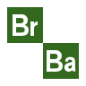

<mat-toolbar color="primary">
    <span style="margin-right: 25%;">
        
        Breaking Bad Wiki 
    </span>

    <button mat-flat-button color="primary" (click)="navigate('characters')">Characters</button>
    <button mat-flat-button color="primary" (click)="navigate('episodes')">Episodes</button>
    <button mat-flat-button color="primary" (click)="navigate('quotes')">Quotes</button>
    <button mat-flat-button color="primary" (click)="navigate('deaths')">Deaths</button>
    <button mat-flat-button color="primary">About</button>
</mat-toolbar>